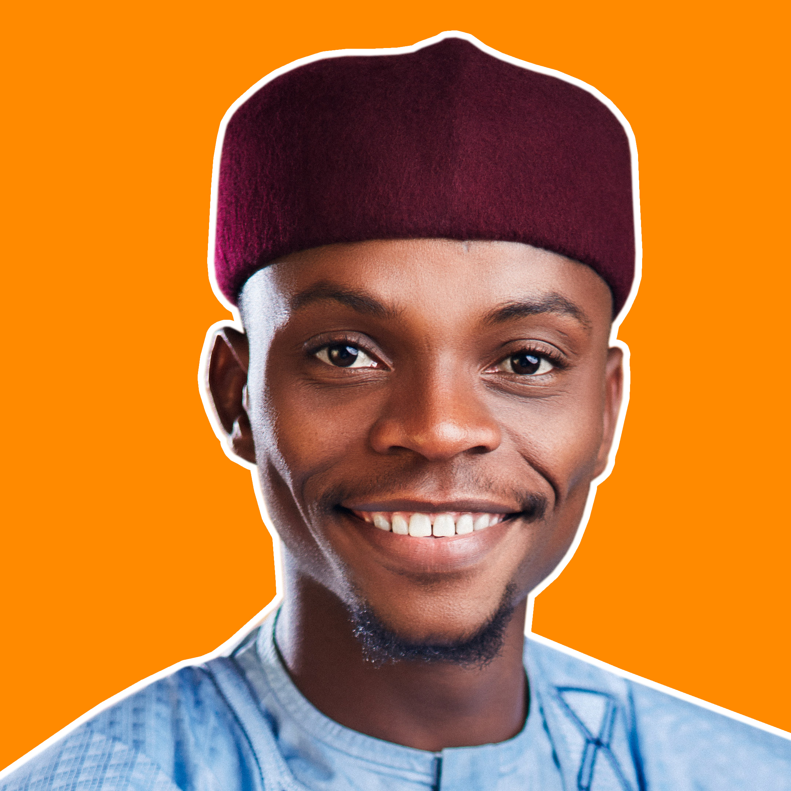

Muhammad Akpode Idoniwako

Objective Statement
With an ultimate goal to inspire a generation, my main objective
has always been to work in a dynamic and innovative environment
where I will be able to contribute to the immediate and protracted
development of the firm, as well as improve on myself professionally
and other wise.
Education
(2022-2026) Aliko Dangote University, Kano State
- Bachelor of Science, Librabry and Information Science
(2011-2016) Christ High School, Mando Kaduna
- West African Examination Certificate
Work Experience
(Mar 2018 - Sept 2019) - Snapstudios Kaduna
- Photographer & General Manager
- Oversee daily business operations
- Maintained customer records and updated account information
- Resolved customer complaints and issues
- Answer customer inquiries via phone and email
(Mar 2019 - June 2023) - Urban Mai Hoto Concepts Nigeria
- Photographer & Administrative Manager
- Oversee daily business operations
- Maintained customer records and updated account information
- Resolved customer complaints and issues
Skills Summary
- Excellent communication skills with analytical mind
- Highly motivated and target oriented
- Persistent, prompt, meticulous, docile, diligent and adaptable
- Excellent personal initiative
- Ability to rapidly learn new techniques/methods
- Ability to work under pressure
Awards and Certifications
- Employe of the Year - Snapstudios (2019)
Other